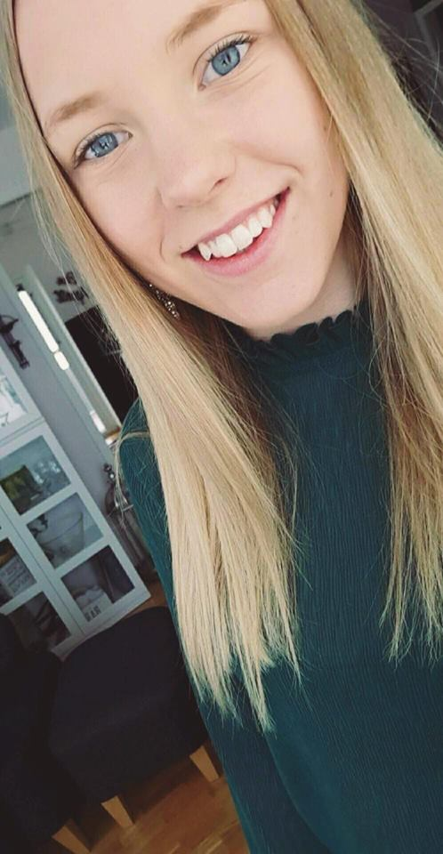

The Scottish Clans
Denna blogg kommer innehålla inlägg från kurserna Webbutveckling 1 och Engelska 7. Detta är ett skolprojekt som kommer skrivas under HT-17 och VT-18.
Denna blogg kommer innehålla inlägg från kurserna Webbutveckling 1 och Engelska 7. Detta är ett skolprojekt som kommer skrivas under HT-17 och VT-18.
Olivia
TE16
The Mackenzie clan is very famous and in this chapter I will dig a bit deeper into this clan.

Let's start with the name, Mackenzie. The name is of scottish origin and rises from Gaelic. Mackenzie is an anglicised form of the Gaelic Mac Coinnich, which is a form of the personal name Coinneach. Today the name Coinneach is generally anglicised as Kenneth. The mackenzie clan is sometimes called Kenneth. The clans territory was rather large and the chief's of the mackenzies lead the 4th most powerful clan in Scotland. Unfortunately, the clan chief Francis Mackenzie Humberston died in 1815 and with his death, the direct male line of the Mackenzie chiefs became extinct. In 1979 Roderick Grant Francis Blunt-Mackenzie, the 4th Earl of Cromartie changed is surname til Mackenzie and then became chief by the Lord Lyon King of Arms. Today's chief is the fifth Earl, John Ruaridh Grant Mackenzie (in 2003, John actually lived in castle Leod, fascinating).
Eilean Donan Castle on Loch Duich in Kintail was the first castle to be associated with the Mackenzie clan. Eilean Donan was where it all began in the late 13th century when Coineach MacCoineach - Kenneth son of Kenneth - gave his name to the clan: the name means son of the fair one in Gaelic. Later, the power of the clan moved to the east and to Brahan castle. Sadly, the castle did not survive World War Two. So now, the home for the Mackenzie clan's chief is within castle Leod. Here is a picture of castle Brahan.
This clan's history is long and there is tons of information about it online. I am not going to write about that, because I don't think it will be interesting to read about and like I said, Their history is long… So I hope you found this chapter interesting anyway and that you learned some from it.